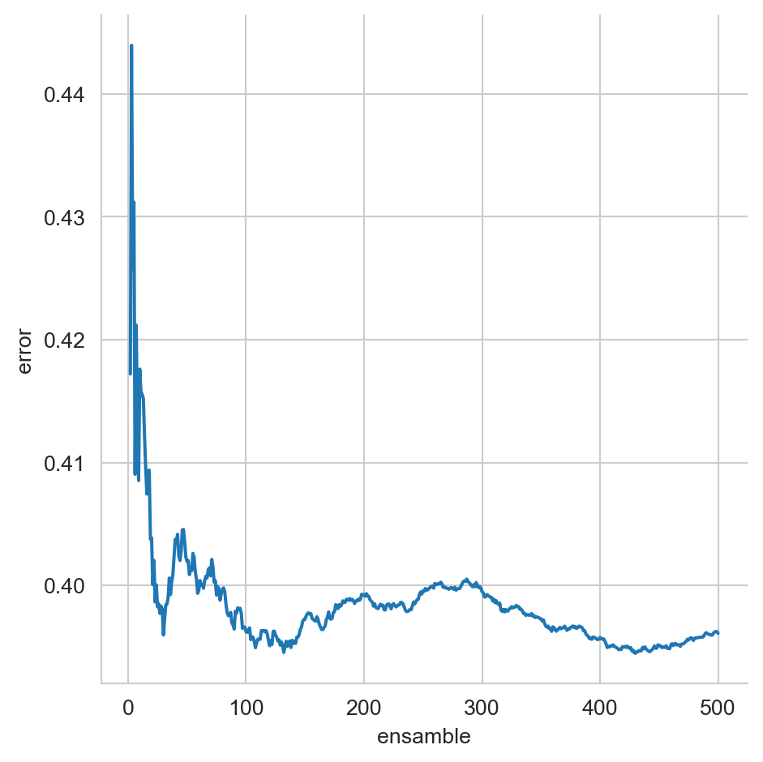
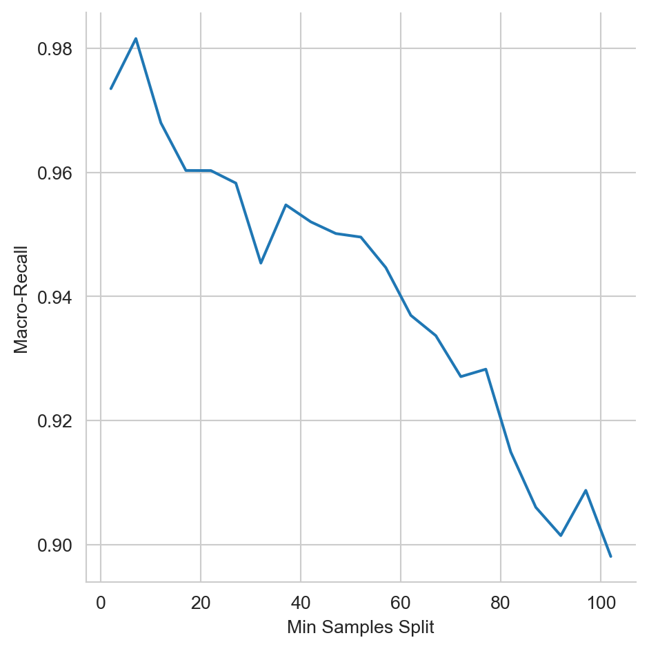

from scipy.stats import binom
from sklearn.datasets import load_diabetes, load_digits
from sklearn.model_selection import train_test_split
from sklearn.svm import LinearSVC, LinearSVR, SVR
from sklearn.tree import DecisionTreeClassifier, DecisionTreeRegressor
from sklearn.ensemble import BaggingRegressor
from sklearn.ensemble import RandomForestRegressor
from sklearn.ensemble import RandomForestClassifier
from sklearn.neighbors import KNeighborsRegressor
from sklearn.ensemble import StackingRegressor
from sklearn.metrics import recall_score, mean_absolute_percentage_error
from collections import Counter
from matplotlib import pylab as plt
import numpy as np
import pandas as pd
import seaborn as sns12 Ensambles
El objetivo de la unidad es conocer y aplicar diferentes técnicas para realizar un ensamble de clasificadores o regresores.
12.1 Paquetes usados
12.2 Introducción
Como se ha visto hasta el momento, cada algoritmo de clasificación y regresión tiene un sesgo, este puede provenir de los supuestos que se asumieron cuando se entrenó o diseño; por ejemplo, asumir que los datos provienen de una distribución gaussiana multivariada o que se pueden separar los ejemplos mediante un hiperplano, entre otros. Dado un problema se desea seleccionar aquel algoritmo que tiene el mejor rendimiento, visto de otra manera, se selecciona el algoritmo cuyo sesgo este mejor alineado al problema. Una manera complementaria sería utilizar varios algoritmos y tratar de predecir basados en las predicciones individuales de cada algoritmo. En esta unidad se explicarán diferentes metodologías que permiten combinar predicciones de algoritmos de clasificación y regresión.
12.3 Fundamentos
La descripción de ensambles se empieza observando el siguiente comportamiento. Suponiendo que se cuenta con \(M\) algoritmos de clasificación binaria cada uno tiene una exactitud de \(p=0.51\) y estos son completamente independientes. El proceso de clasificar un elemento corresponde a preguntar la clase a los \(M\) clasificadores y la clase que se recibe mayor votos es la clase seleccionada, esta votación se comporta como una variable aleatoria que tiene una distribución Binomial. Suponiendo con la clase del elemento es \(1\), en esta condición la función cumulativa de distribución (\(\textsf{cdf}\)) con parámetros \(k=\lfloor \frac{M}{2}\rfloor,\) \(n=M\) y \(p=0.51\) indica seleccionar la clase \(0\) y \(1 - \textsf{cdf}\) corresponde a la probabilidad de seleccionar la clase \(1\).
La Figura 12.1 muestra como cambia la exactitud, cuando el número de clasificadores se incrementa, cada uno de esos clasificadores son independientes y tiene una exactitud de \(p=0.51,\) se puede observar que cuando \(M=501\) el rendimiento es \(0.673\) y con \(9,999\) clasificadores se tiene un valor de \(0.977.\)
Código
N = range(3, 10002, 2)
cdf_c = [1 - binom.cdf(np.floor(n / 2), n, 0.51) for n in N]
df = pd.DataFrame(dict(accuracy=cdf_c, ensamble=N))
_ = sns.relplot(data=df, x='ensamble', y='accuracy', kind='line')En el caso de regresión, en particular cuando se usa como función de error el cuadrado del error, i.e., \((\hat y - y)^2\) se tiene el intercambio entre varianza y sesgo, el cual se deriva de la siguiente manera.
\[ \begin{split} \mathbb E[(\hat y - y)^2] &=\\ &=\mathbb E[(\hat y - \mathbb E[\hat y] + \mathbb E[\hat y] - y)^2]\\ &=\underbrace{\mathbb E[(\hat y - \mathbb E[\hat y])^2]}_{\mathbb V(\hat y)} + \mathbb E[(\mathbb E[\hat y] - y)^2] \\ &+ 2 \mathbb E[(\hat y - \mathbb E[\hat y])(\mathbb E[\hat y] - y)]\\ &=\mathbb V(\hat y) + (\underbrace{\mathbb E[\hat y] - y}_{\text{sesgo}})^2 + 2 \underbrace{\mathbb E[(\hat y - \mathbb E[\hat y])]}_{\mathbb E[\hat y] - \mathbb E[\hat y] = 0}(\mathbb E[\hat y] - y)\\ &=\mathbb V(\hat y) + (\mathbb E[\hat y] - y)^2 \end{split} \]
Se observa que el cuadrado del error está definido por la varianza de \(\hat y\) (i.e., \(\mathbb V(\hat y)\)), la cual es independiente de la salida \(y\) y el sesgo al cuadrado del algoritmo (i.e., \((\mathbb E[\hat y] - y)^2\)).
En el contexto de ensamble, asumiendo que se tienen \(M\) regresores independientes donde la predicción está dada por \(\bar y = \frac{1}{M}\sum_{i=1}^M \hat y^i\), se tiene que el sesgo de cada predictor individual es igual al sesgo de su promedio (i.e., \((\mathbb E[\bar y] - y) = (\mathbb E[\hat y^i] - y)\)) como se puede observar a continuación.
\[ \begin{split} \mathbb E[\bar y] &= \mathbb E[\frac{1}{M} \sum_{i=1}^M \hat y^i]\\ &=\frac{1}{M} \sum_{i=1}^M \underbrace{\mathbb E[\hat y^i]}_{\mathbb E[\hat y]} =\frac{1}{M} M \mathbb E[\hat y] =\mathbb E[\hat y] \end{split} \]
Por otro lado la varianza del promedio (i.e., \(\mathbb V(\bar y)\)) está dada por \(\mathbb V(\bar y)=\frac{1}{M} \mathbb V(\hat y)\), que se deriva siguiendo los pasos del error estándar de la media (Sección A.1.1).
Esto quiere decir que si se tienen \(M\) regresores independientes, entonces el error cuadrado de su promedio es menor que el error de cada regresor individual, esto es porque su la varianza se reduce tal y como se mostró.
Tanto en el caso de clasificación como en el caso del error cuadrado, es poco probable contar con clasificadores y regresores que sean completamente independientes, entonces sus predicciones van a estar relacionadas en algún grado y no se podrá llegar a las reducciones obtenidas en el procedimiento presentado.
12.4 Bagging
Siguiendo con la idea de combinar \(M\) instancias independientes de un tipo de algoritmo, en esta sección se presenta el algoritmo Bagging (Bootstrap Aggregation) el cual como su nombre lo indica se basa la técnica de Bootstrap (Sección A.2) para generar \(M\) instancias del algoritmo y la combinación es mediante votación o el promedio en caso de regresión o que se cuente con la probabilidad de cada clase.
12.4.1 Ejemplo: Dígitos
Para ejemplificar el uso del algoritmo de Bagging se utilizará el conjunto de datos de Dígitos. Estos datos se pueden obtener y generar el conjunto de entrenamiento (\(\mathcal T\)) y prueba (\(\mathcal G\)) con las siguientes instrucciones.
X, y = load_digits(return_X_y=True)
T, G, y_t, y_g = train_test_split(X, y,
test_size=0.2,
random_state=0)Los algoritmos que se utilizarán de base son Máquinas de Soporte Vectorial Lineal (Sección 9.4) y Árboles de Decisión (Capítulo 8). Lo primero que se realizará es entrenar una instancia de estos algoritmos para poder comparar su rendimiento en el conjunto de prueba contra Bagging.
La siguientes instrucciones entrenan una máquina de soporte vectorial, calculando en la segunda línea el macro-recall (Sección 4.2.6). El rendimiento se presenta en una tabla para facilitar la comparación.
svc = LinearSVC(dual=False).fit(T, y_t)
svc_recall = recall_score(y_g, svc.predict(G),
average="macro")Complementando las instrucciones anteriores, en el siguiente código se entrena un Árbol de Decisión.
tree = DecisionTreeClassifier(criterion='entropy',
min_samples_split=9).fit(T, y_t)
tree_recall = recall_score(y_g, tree.predict(G),
average="macro")El algoritmo de Bootstrap inicia generando las muestras tal y como se realizó en el ejemplo del error estándar de la media (Sección A.2.1); el siguiente código genera las muestras, en particular el ensamble sería de \(M=11\) elementos.
B = np.random.randint(T.shape[0],
size=(11, T.shape[0]))Empezando con Bagging usando como clasificador base la Máquina de Soporte Vectorial Lineal. La primera línea de las siguientes instrucciones, entra los máquinas de soporte, después se realizan las predicciones. En la tercera línea se calcula la clase que tuvo la mayor cantidad de votos y finalmente se calcula el error en términos de macro-recall.
svc_ins = [LinearSVC(dual=False).fit(T[b], y_t[b])
for b in B]
hys = np.array([m.predict(G) for m in svc_ins])
hy = np.array([Counter(x).most_common(n=1)[0][0]
for x in hys.T])
bsvc_recall = recall_score(y_g, hy, average="macro")El siguiente algoritmo son los Árboles de Decisión; la única diferencia con respecto a las instrucciones anteriores es la primera línea donde se entrenan los árboles.
tree_ins = [DecisionTreeClassifier(criterion='entropy',
min_samples_split=9).fit(T[b], y_t[b])
for b in B]
hys = np.array([m.predict(G) for m in tree_ins])
hy = np.array([Counter(x).most_common(n=1)[0][0]
for x in hys.T])
btree_recall = recall_score(y_g, hy,
average="macro")Como se mencionó, la predicción final se puede realizar de dos manera en clasificación una es usando votación, como se vió en los códigos anteriores y la segunda es utilizando el promedio de las probabilidades. En el caso de las Máquinas de Soporte Vectorial, estas no calculas las probabilidad de cada clase, pero se cuenta con el valor de la función de decisión, en el siguiente código se usa está información, la segunda y tercera línea normaliza los valores para que ningún valor sea mayor que \(1\) y menor que \(-1\) y finalmente se calcula la suma para después seleccionar la clase que corresponde al argumento máximo.
hys = np.array([m.decision_function(G) for m in svc_ins])
hys = np.where(hys > 1, 1, hys)
hys = np.where(hys < -1, -1, hys)
hys = hys.sum(axis=0)
csvc_recall = recall_score(y_g, hys.argmax(axis=1),
average="macro")El procedimiento anterior se puede adaptar a los Árboles de Decisión utilizando el siguiente código.
hys = np.array([m.predict_proba(G)
for m in tree_ins])
ctree_recall = recall_score(y_g,
hys.sum(axis=0).argmax(axis=1),
average="macro")Finalmente, la Tabla 12.1 muestra el rendimiento de las diferentes combinaciones, se puede observar el valor tanto de las Máquinas de Soporte Vectorial (M.S.V) Lineal y de los Árboles de decisión cuando se utilizaron fuera del ensamble; en el segundo renglón se muestra el rendimiento cuando la predicción del ensamble se hizo mediante votación y el último renglón presenta el rendimiento cuando se hace la suma.
Comparando los diferentes rendimientos, se puede observar que no existe mucha diferencia en rendimiento en las M.S.V Lineal y que la mayor mejora se presentó en los Árboles de Decisión. Este comportamiento es esperado dado que para que Bagging funciones adecuadamente requiere algoritmos inestables, es decir, algoritmos cuyo comportamiento cambia considerablemente con un cambio pequeño en el conjunto de entrenamiento, este es el caso de los Árboles. Por otro lado las M.S.V son algoritmos estables y un cambio pequeño en su conjunto de entrenamiento no tendrá una repercusión considerable en el comportamiento del algoritmo.
| M.S.V. Lineal | Árboles de Decisión | |
|---|---|---|
| Único | \(0.9425\) | \(0.8342\) |
| Votación (\(M=11\)) | \(0.9520\) | \(0.9380\) |
| Suma (\(M=11\)) | \(0.9471\) | \(0.9323\) |
12.4.2 Ejemplo: Diabetes
Ahora toca el turno de atacar un problema de regresión mediante Bagging, el problema que se utilizará es el de Diabetes. Las instrucciones para obtener el problema y generar los conjuntos de entrenamiento (\(\mathcal T\)) y prueba (\(\mathcal G\)) se muestra a continuación.
X, y = load_diabetes(return_X_y=True)
T, G, y_t, y_g = train_test_split(X, y,
random_state=0,
test_size=0.2)Tomando el caso de Dígitos como base, el primer algoritmo a entrenar es la M.S.V. Lineal y se usa como mediada de rendimiento el porcentaje del error absoluto (Ecuación 4.6); tal y como se muestran en las siguientes instrucciones.
svr = LinearSVR(dual='auto').fit(T, y_t)
svr_mape = mean_absolute_percentage_error(y_g,
svr.predict(G))El árbol de decisión y su rendimiento se implementa con el siguiente código.
tree = DecisionTreeRegressor(min_samples_split=9).fit(T,
y_t)
tree_mape = mean_absolute_percentage_error(y_g,
tree.predict(G))Al igual que en el caso de clasificación, la siguiente instrucción genera los índices para generar las muestras. Se hace un ensamble de \(M=11\) elementos.
B = np.random.randint(T.shape[0], size=(11, T.shape[0]))En el caso de regresión, la predicción final corresponde al promedio de las predicciones individuales, la primera línea de las siguientes instrucciones se entrena las M.S.V Lineal, en la segunda instrucción se hacen las predicciones y se en la tercera se realiza el promedio y se mide el rendimiento.
svr_ins = [LinearSVR(dual='auto').fit(T[b], y_t[b])
for b in B]
hys = np.array([m.predict(G) for m in svr_ins])
bsvr_mape = mean_absolute_percentage_error(y_g,
hys.mean(axis=0))De manera equivalente se entrenan los Árboles de Decisión, como se muestra a continuación.
tree_ins = [DecisionTreeRegressor(min_samples_split=9).fit(T[b], y_t[b])
for b in B]
hys = np.array([m.predict(G) for m in tree_ins])
btree_mape = mean_absolute_percentage_error(y_g,
hys.mean(axis=0))La Tabla 12.2 muestra el rendimiento de los algoritmos de regresión utilizados, al igual que en el caso de clasificación, la M.S.V. no se ve beneficiada con el uso de Bagging. Por otro lado los Árboles de Decisión tienen un incremento en rendimiento considerable al usar Bagging.
| M.S.V. Lineal | Árboles de Decisión | |
|---|---|---|
| Único | \(0.4131\) | \(0.5479\) |
| Promedio (\(M=11\)) | \(0.4132\) | \(0.3946\) |
Hasta este momento los ensambles han sido de \(M=11\) elementos, queda la duda como varía el rendimiento con respecto al tamaño del ensamble. La Figura 12.2 muestra el rendimiento de Bagging utilizando Árboles de Decisión, cuando el ensamble cambia \(M=2,\ldots,500.\) Se observa que alrededor que hay un decremento importante cuando el ensamble es pequeño, después el error se incrementa y vuelve a bajar alrededor de \(M=100.\) Finalmente se ve que el rendimiento es estable cuando \(M>200.\)
Código
B = np.random.randint(T.shape[0], size=(500, T.shape[0]))
tree_ins = [DecisionTreeRegressor(min_samples_split=9).fit(T[b], y_t[b]) for b in B]
hys = np.array([m.predict(G) for m in tree_ins])
M = range(2, len(tree_ins) + 1)
p = [mean_absolute_percentage_error(y_g,
hys[:i].mean(axis=0))
for i in M]
df = pd.DataFrame(dict(error=p, ensamble=M))
sns.relplot(data=df, x='ensamble', y='error', kind='line')

Nota
Las clases BaggingClassifier y BaggingRegressor implementan el ensamble de Bagging. Estas clases tienen parámetros que permiten ejecutar variaciones de la idea original. El uso de la clase BaggingRegressor se ilustra con el siguiente código,
tree_ins = DecisionTreeRegressor(min_samples_split=9)
ens = BaggingRegressor(tree_ins).fit(T, y_t)
hy = ens.predict(G)donde el promedio del error absoluto es \(0.3997.\)
12.5 Bosques Aleatorios (Random Forest)
En la sección anterior se vió como se puede utilizar Bagging y Árboles de Decisión para generar un ensamble, en general Bagging (Sección 12.4) creado con árboles de decisión se les conoce como bosques aleatorios. Breiman (2001) propone los árboles aleatorios y muestra de manera teórica su comportamiento en la predicción así como de manera experimental su rendimiento en problemas de clasificación.
El uso de árboles aleatorios es directo mediante las clases RandomForestClassifier y RandomForestRegressor tal y como se muestra en el siguiente código:
ens = RandomForestRegressor(min_samples_split=9)
ens.fit(T, y_t)
hy = ens.predict(G)donde el promedio del error absoluto es \(0.3924.\)
Actividad
Visualizar el efecto que tiene el parámetro min_samples_split en el algoritmo RandomForestClassifier cuando este varía como se muestra en Figura 12.3. El problema utilizado es el de dígitos (Sección B.3.3) con una partición de 80% para entrenamiento y 20% para validación.

12.6 Stack Generalization
Continuando con la descripción de ensambles, se puede observar que Bagging en el caso de la media se puede representar como \(\sum_i^M \frac{1}{M} \hat y^i,\) donde el factor \(\frac{1}{M}\) se puede observar como un parámetro a identificar. Entonces la idea siguiente sería como se podría estimar parámetros para cada uno de los estimadores bases, e.g., \(\sum_i^M w_i \hat y^i\) donde \(w_i\) para bagging corresponde a \(\frac{1}{M}.\) Se podría ir más allá y pensar que las predicciones \(\mathbf y=(\hat y^1, \ldots, \hat y^M)\) podrían ser la entrada a otro estimador.
Esa es la idea detrás de Stack Generalization, Wolpert (1992) propone utilizar las predicciones de los estimadores bases como las entradas de otro estimador. Para poder llevar este proceso es necesario contar con un conjunto independiente del conjunto de entrenamiento para encontrar los parámetros del estimador que combina las predicciones.
12.6.1 Ejemplo: Diabetes
Para ejemplificar el uso de Stack Generalization, se usa el conjunto de datos de Diabetes. Como se acaba de describir es necesario contar con un conjunto independiente para estimar los parámetros del estimador del stack. Entonces el primer paso es dividir el conjunto de entrenamiento en un conjunto de entrenamiento y validación (\(\mathcal V,\)) tal y como se muestra en la siguiente instrucción.
T1, V, y_t1, y_v = train_test_split(T, y_t,
test_size=0.3)Para este ejemplo se usará como regresores bases el algoritmo de Vecinos Cercanos (Sección 7.7) con diferentes parámetros (primera línea), después se usan los modelos para predecir el conjunto de validación (\(\mathcal V\)) y prueba (\(\mathcal G\)), esto se observa en la segunda y tercera línea del siguiente código.
models = [KNeighborsRegressor(n_neighbors=n).fit(T1, y_t1)
for n in [7, 9]]
V_stack = np.array([m.predict(V) for m in models]).T
G_stack = np.array([m.predict(G) for m in models]).TEl porcentaje del error absoluto (Ecuación 4.6) de los estimadores bases en el conjunto de prueba se puede calcular con el siguiente código
mape_test = []
for hy in G_stack.T:
mape = mean_absolute_percentage_error(y_g, hy)
mape_test.append(mape)teniendo los siguientes valores \(0.3694\) y \(0.3614\), respectivamente.
Finalmente, es momento de entrenar el regresor que combinará las salidas de los estimadores bases, i.e., Vecinos Cercanos. Se decidió utilizar una Máquina de Soporte Vectorial (Sección 9.4) con kernel polinomial de grado \(2\). Los parámetros de la máquina se estiman en la primera línea, y después se predicen los datos del conjunto de prueba.
stacking = SVR(kernel='poly', degree=2).fit(V_stack, y_v)
hy = stacking.predict(np.vstack(G_stack))El error (Ecuación 4.6) obtenido por este procedimiento es de \(0.3477\); cabe mencionar que no en todos los casos el procedimiento de stacking consigue un mejor rendimiento que los estimadores bases. En las siguientes instrucciones se entrena un Bagging con Árboles de Decisión para ser utilizado en lugar de la Máquina de Soporte Vectorial.
st_trees = BaggingRegressor(estimator=DecisionTreeRegressor(min_samples_split=9),
n_estimators=200).fit(V_stack, y_v)
hy = st_trees.predict(np.vstack(G_stack))
mape = mean_absolute_percentage_error(y_g, hy)El rendimiento de este cambio es \(0.4239\).
Nota
Las classes StackingClassifier y StackingRegressor implementan la idea de Stack Generalization. El siguiente código muestra su uso en el ejemplo de diabetes, utilizando los algoritmos de vecinos cercanos y máquinas de soporte vectorial.
models = [(f'KNN-{n}', KNeighborsRegressor(n_neighbors=n))
for n in [7, 9]]
final_estimator = SVR(kernel='poly', degree=2)
stack = StackingRegressor(models, final_estimator=final_estimator).fit(T, y_t)
hy = stack.predict(G)El promedio del error absoluto es \(0.3751.\)